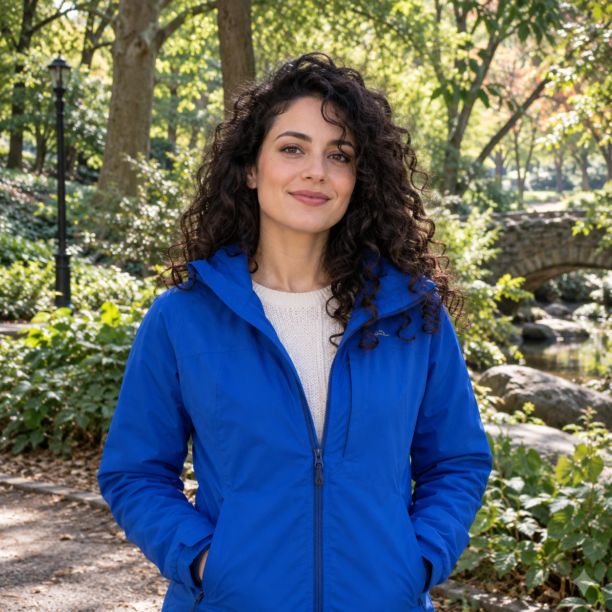

01顏色比較
RGB 色差門檻
計算像素和取樣幕色之間的 RGB 距離。距離小就透明，距離大就保留，中間可以加一段柔邊。
D = √((R−Rₖ)² + (G−Gₖ)² + (B−Bₖ)²)距離越小，越接近取樣幕色
幕色邊緣混色主體
優點簡單、快，適合均勻平底色。限制只要主體有近似顏色，也會一起被清除。
PIXEL PROCESSING FIELD GUIDE
背景是平綠幕、洋紅幕、藍幕，還是一張公園照片？素材條件不同，適合的去背方法也不同。這裡把像素攤開來，讓你調整參數、看見差異，再決定該用哪一種。
開始像素實驗
01 — INTERACTIVE WORKBENCH
選示範素材，或從裝置載入圖片。試算在本機瀏覽器執行，圖片不會上傳。
圖片留在瀏覽器・不會上傳
深色長髮和細髮絲落在綠幕前，適合比較邊緣 alpha 與去色汙。
範例包含六張 AI 生成素材（綠幕、藍幕、青幕、黃幕與自然背景照片）及一張 B2 洋紅幕參考圖。選 F 公園照片，再切換到 U2Net-p 模型遮罩，可比較色鍵和 rembg 同款模型的結果。模型首次使用會載入約 4.6 MB；推論在瀏覽器本機執行，照片不會上傳。示範素材不代表各專案正式實作和參數完全相同。
02 — HOW THE PIXELS CHANGE
色鍵看像素顏色和邊界連通；U2Net-p 則從整張影像預測主體遮罩。素材不同，能依賴的線索也不同。
計算像素和取樣幕色之間的 RGB 距離。距離小就透明，距離大就保留，中間可以加一段柔邊。
優點簡單、快，適合均勻平底色。限制只要主體有近似顏色，也會一起被清除。
不只看「像不像純綠」，而是看綠通道是否壓過紅、藍。再估算每個邊緣像素被幕色覆蓋的比例，保留半透明髮絲。
優點有機會還原細髮、羽毛和柔邊。限制幕色若和主體顏色重疊，單靠顏色仍無法分辨。
先找出和幕色相近的像素，再從畫面邊界往內追蹤。只有連到外部背景的區域才會被清除；主體裡封閉的同色小物有機會留下。
優點保留和背景同色、但被主體包住的細節。限制輪廓有缺口時，背景可能從缺口灌進主體。
模型不需要指定幕色，而是從整張影像的形狀、紋理和上下文推測主體，輸出灰階遮罩，再把遮罩值當作每個像素的 alpha。
優點可處理沒有單一幕色的自然照片。限制模型可能漏掉細髮、透明物件或近色邊緣；要放大檢查並視需要修遮罩。
查看 rembg 專案與模型說明 ↗本頁用 ONNX Runtime Web 在瀏覽器推論；首次載入約 4.6 MB，圖片不會上傳。
KEY COLOR IS A CHANNEL PATTERN
色差法把 RGB 當成三維座標；通道優勢法則利用幕色最突出的通道組合。選一支幕色，看看它的判斷式。
目前選擇綠幕。純綠分數高；非綠主體通常分數低。分數可用來估算邊緣混入多少幕色。
一般化做法是先找出幕色佔優的通道，再比較「最弱的幕色通道」與「最強的其他通道」。所以藍幕不能誤用洋紅幕的判斷式；在 cutout-skill 中，藍幕需要明確指定色碼。
抗鋸齒像素是主體和幕色混在一起的顏色。先算 alpha，再在半透明邊界修正幕色殘留；對整張圖改色，可能會洗掉主體本來就有的綠葉或紫色配件。
透明像素裡仍存著原來的幕色。縮圖或放大時，如果直接混合 RGB，幕色會滲回輪廓。用 premultiplied alpha 重採樣，並在每次縮放後重新檢查邊緣。
綠幕旁的綠葉、洋紅幕旁的紅披風，都可能和背景一起變透明。最可靠的修正通常是換一支不會出現在主體上的幕色，再從原圖重算。
03 — PICK THE RIGHT TOOL
單色幕通常先試色鍵；自然照片可試 U2Net-p 主體遮罩，再檢查模型留下的輪廓。
綠、洋紅、藍沒有固定排名。選哪一色，取決於主體裡有哪些顏色、幕面夠不夠均勻，以及你的輸出用途。
04 — FROM OUR REPOS
網站用簡化案例教原理；正式工具會依素材、用途和失敗成本採用不同流程。
給角色立繪、貼圖和道具用的平底色流程：綠／洋紅自動判幕，第三色明確指定，邊界連通、alpha 估算、邊帶 despill 和驗收。
看腳本與實作筆記 ↗ B / 互動調整貼圖切格、色鍵去背和匯出流程。可以逐張調整去背參數，回到原圖重算，再檢查透明度和色邊。
看貼圖工具 ↗ C / 混合背景遇到單色幕時走色鍵；遇到一般照片背景時走瀏覽器端 AI 遮罩。先判斷素材類型，再挑方法。
看瀏覽器去背工具 ↗ D / 實際去背實作AI 貼圖格盤會先切成單張，再用四角取樣判斷綠幕、按色距建立透明邊緣並抑制綠溢；純邏輯與測試都在 repo。
看對話製造機程式碼 ↗A GOOD CUTOUT STARTS BEFORE THE CUT
最好的去背流程，是能保住主體細節、符合輸出需求，而且每次重跑都能得到可預期結果的那一條。
回到實驗桌